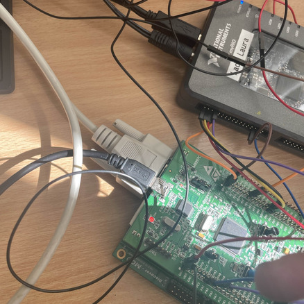

Roller Coaster Automation

An STM32F4 firmware prototype exploring the control and instrumentation around a roller-coaster braking system. The code combines an operator setup flow with ADC sampling, timer-generated PWM, serial communications, I2C callbacks, and a small state-machine structure.
Hardware and firmware specification
- Configured MCU
- STM32F407VGTx (STM32F4, LQFP100)
- System clock
- 128 MHz, generated from an 8 MHz HSE source
- Firmware framework
- STM32 HAL / STM32CubeIDE project configuration
- Operator serial port
- USART6 on PC6/PC7, 115200 baud, 8 data bits, no parity, 1 stop bit
- Analogue input
- ADC1 channel 1 on PA1, 12-bit conversion
- PWM output
- TIM9 channel 1 on PE5; timer values are configured for a 50 Hz period
- I2C interface
- I2C1 on PB6/PB7, configured for 400 kHz, 7-bit addressing
- Status indicators
- Four GPIO outputs on PD12–PD15
Startup parameters
At boot, the initial state asks the operator for weight, speed, brake force, brake time, and pulse distance over the serial console. These values are collected into a shared MachineData structure. The input helper checks for digits and a decimal point before conversion, then setup hands control to the manual state.
These fields describe the intended operating model, but the current firmware does not use all of them to calculate a physical stopping profile. In particular, weight, speed, entered brake force, brake time, and pulse distance are stored but are not combined into an automatic braking calculation in the current control loop.
Manual control and signal path
The manual state starts the ADC in interrupt-driven, continuous-conversion mode. ADC completion callbacks accumulate samples; after 256 samples the code averages the readings, updates the PWM compare value, converts the result to a voltage and percentage, and makes that percentage available as a one-byte I2C response. The code assumes a 3.3 V ADC reference when it converts the 12-bit reading.
The brake helper accepts a percentage from 0 to 100 and maps it to a pulse width between approximately 0.5 ms and 2.5 ms. TIM9 uses a 200-count period after its prescaler, which corresponds to a nominal 20 ms (50 Hz) frame with the configured timer clock. The configured output pin is PE5 / TIM9_CH1.
State machine and peripheral roles
The state table defines four states: INITIAL, MANUAL, AUTOMATIC, and SAFE. The current startup transition is INITIAL → MANUAL. The manual path can enter SAFE if re-enabling the I2C listen operation fails. The safe state commands the maximum brake setting and changes the status LEDs.
The automatic-state function currently sequences the GPIO indicators; it is not a closed-loop braking controller. The project configuration also maps PA6 to TIM3 channel 1 input capture, but that capture input is not used by the current main control logic. USART6 provides the blocking serial console; a receive-interrupt helper exists in the source but is not enabled by the current main initialization path. I2C returns the sampled control value, and GPIO outputs communicate basic state.
Current scope and safety
This repository is useful as an embedded-systems prototype and a study in peripheral setup and interrupt-driven data flow. It is not a complete roller-coaster controller, a validated brake model, or a safety-certified system. It must not be used to control a real ride; any such application would require professionally engineered hardware, redundancy, fault handling, verification, and formal safety approval.
Back to Work